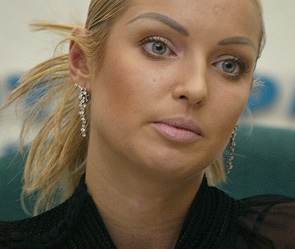

Во вчерашнем эфире Радио Свобода ведущий Мумин Шакиров опрашивал людей, которые 5 лет назад публично оправдали первый приговор Ходорковскому. В их числе тогда были такие известные персоны как Георгий Гречко, Александр Калягин, Станислав Говорухин, Анастасия Волочкова, Валентин Юдашкин, Алина Кабаева, Александр Розенбаум.
Первой до кого удалось дозвониться ведущему была известная в прошлом балерина Анастасия Волочкова. Вот что она ответила.
Практически сразу после интервью в сетевом дневнике Волочковой появилась запись о выходе из партии.
В своём заявлении Анастасия обвиняет когда-то родную партию в обмане, в том что её просто использовали «когда нужно было куда-то сходить, посветиться на фоне партийных баннеров». Вспоминает, что после того как она участвовала в выборах мэра Сочи, то вдруг стала персоной нон-грата в Краснодарском крае.
Зато ставшая знаменитой пляжная фотосессия Анастасии «вызвала резкое негодование в партийных рядах. «Как такое может быть! Член партии ЕР вдруг обнажает грудь!»
Радио Свобода обещает в ближайшее время попробовать дозвониться и до других знаменитостей, подписавшихся под письмом
Текст «Письма пятидесяти»
Обращение деятелей культуры, науки, представителей общественности в связи с приговором, вынесенным бывшим руководителям НК ''ЮКОС''
Оглашен приговор по делу бывших руководителей нефтяной компании ЮКОС М. Ходорковского, П. Лебедева и А. Крайнова. Отошло на второй план скандальное дело их коллеги А. Пичугина, обвиненного в организации заказных убийств. И с новой силой зазвучали голоса сомневающихся в справедливости принятых решений.
Конечно, собственное суждение по любому вопросу, пусть и отличное от мнения большинства, в демократическом обществе может иметь каждый. И дело не в том, что те, кто обвиняет правосудие в предвзятости и необъективности, даже не являются профессиональными юристами, чьи оценки могли бы считаться авторитетными.
На наш взгляд, важнее другое. В правовом обществе решение о виновности и невиновности человека принимает суд, и только суд. Государством должен управлять закон, единый для всех. И по закону все члены общества, обычные граждане или же представители крупного бизнеса, должны платить налоги.
Да, правовая система сегодняшнего государства несовершенна, и мы открыто говорим о необходимости ее улучшения. Не надо закрывать глаза на существующие недостатки, но и обсуждение отдельного судебного процесса не должно носить характер дискредитации всей судебной системы, государства и общества и ставить под сомнение основы законности и порядка в стране. Иначе волей-неволей начинаешь задумываться, а так ли те, кто постоянно говорит о несправедливости, заботятся о соблюдении прав обвиняемых? Или они преследуют иные интересы, раз позволяют себе игнорировать тот факт, что неуплата налогов в России, как и в любой нормальной стране, считается одним из самым серьезных правонарушений?
"Большие деньги" крупного бизнеса не должны влиять на политику и быть выше Закона. Надо уважать общество, а не считать, что финансовая мощь может давать над ним абсолютную власть. Нельзя ради коммерческого успеха пренебрегать ценностью человеческой жизни и рушить демократические принципы. Грязными руками добрые дела не делаются. И это тоже закон. Нравственный закон справедливости, который существует в обществе испокон веков независимо от политики и денег.
Абакумов С. А. , председатель Правления Национального гражданского комитета по взаимодействию с правоохранительными, законодательными и судебными органами и Национального фонда "Общественное признание" Антонов-Овсеенко А. В. , историк, публицист, писатель, председатель Регионального общественного объединения жертв политрепрессий, директор Музея ГУЛАГа Бокерия Л. А. , директор Центра сердечно-сосудистой хирургии им. А. Н. Бакулева, президент Общероссийской общественной организации "Лига здоровья нации" Блохина Л. В. , президент конфедерации деловых женщин России Большакова М. А. , председатель общероссийской благотворительной организации "Союз семей военнослужащих" Буйнов А. Н. , заслуженный артист Российской Федерации Вашуков М. Ю. , заслуженный артист Российской Федерации Вележева Л. Л. , актриса Государственного академического театра им. Евг. Вахтангова Волочкова А. Ю. , солистка балета, заслуженная артистка Российской Федерации Врагова С. А. , народная артистка России, художественный руководитель театра "Модернъ" Галахов О. Б. , председатель Союза композиторов Москвы, композитор, заслуженный деятель искусств Российской Федерации Галкин Б. С. , президент Гильдии актеров кино России, заслуженный артист Российской Федерации Говорухин С. С. , кинорежиссер Горбатко В. В. , летчик-космонавт, дважды герой Советского Союза Говоров В. Л. , председатель Российского комитета ветеранов войны и военной службы, герой Советского Союза, генерал Армии Горохова Г. Е. , президент Российского союза спортсменов Гречко Г. М. , летчик-космонавт, дважды Герой советского союза Гришин В. Л. , президент Союза "Чернобыль" России Зайцев В. Н. , президент Российской библиотечной ассоциации, генеральный директор Российской Национальной библиотеки Зельдин В. М. , народный артист СССР, артист Центрального академического театра Российской Армии Иванова Л. М. , народная артистка России Ильин И. В. , председатель студенческого союза МГУ Кабаева A. M. , олимпийская чемпионка по художественной гимнастике Кадышева Н. Н. , народная артистка Российской Федерации, руководитель национального театра народной музыки и песни "Золотое кольцо" Калягин А. А. , председатель Союза театральных деятелей России, народный артист Российской Федерации Клинцевич Ф. А. , лидер Российского союза ветеранов Афганистана Клячин Е. Н. , президент Федеральной нотариальной палаты, заслуженный юрист России Ковальчук А. Н. , первый секретарь Союза художников России, народный художник России Лебедев В. В. , председатель Общероссийской общественной организации "Союз православных граждан" Ломакин-Румянцев А. В. , председатель Всероссийского общества инвалидов Лужина Л. А. , народная артистка России, артистка Государственного театра киноактера Маланичева Г. И. , председатель Центрального совета Всероссийского общества охраны памятников истории и культуры Медведев А. Н. , президент Фонда Ролана Быкова, заслуженный деятель искусств Российской Федерации Медведев Р. А. , писатель-историк Мирзоев Г. Б. , президент Гильдии российских адвокатов Насыров М. И. , эстрадный певец Панов Б. Я. , председатель Центрального правления Союза пенсионеров России Роднина И. К. , трехкратная Олимпийская чемпионка, председатель Центрального Совета ВДО "Спортивная Россия" Рожнов О. А. , председатель Российского союза молодежи Розенбаум А. Я. , заместитель председателя Комитета Государственной Думы по культуре, член фракции "Единая Россия" Сахаров А. Н. , директор Института российской истории РАН, член-корреспондент РАН, доктор исторических наук, профессор Сафронов Н. С. , художник Светличная С. А. , заслуженная артистка России, член Союза кинематографистов России Токарев Б. В. , актер, режиссер, продюсер, руководитель киностудии "Дебют" , первый вице-президент Гильдии актеров кино России, заслуженный деятель искусств Российской Федерации Третьяк В. А. , 10-кратный чемпион мира, 3-кратный Олимпийский чемпион по хоккею Фортов В. Е. , академик РАН, вице-президент РАН Халеева И. И. , председатель общественного совета Базовой организации по языкам и культуре государств участников СНГ, президент Российской ассоциации современных языков, ректор Московского государственного лингвистического университета Чайковская Е. А. , заслуженный мастер спорта, тренер олимпийского комитета России по фигурному катанию, заслуженный тренер СССР России, заслуженный деятель искусств Шаинский В. Я. , композитор, народный артист РСФСР, заслуженный деятель искусств Российской Федерации Юдашкин В. А. , модельер одежды, художественный руководитель Дома моды "Валентин Юдашкин"